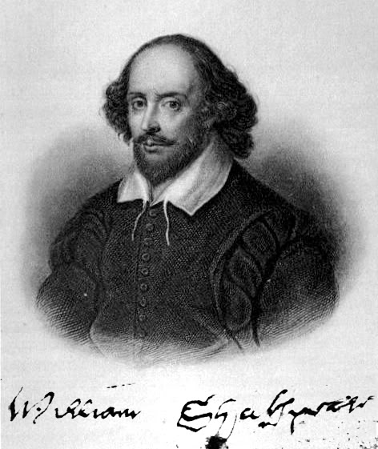

Вилијам Шекспир је рођен у Стратфорду на Ејвону 23.априла 1564. године као треће најстарије дете Марије и Џона Шекспира. Због помагања оцу напустио је основну школу коју је похађао и због тога није могао да стекне велико образовање. Са осамнаест година се оженио Ен Хатавеј која је била старија од њега осам година. Сматра се да је брак склопљен веома брзо због њене трудноће која је уследила након шест месеци њиховог заједничког живота. Говори се да он није био срећан у браку са њом и да је није волео. Доказ за то огледао се у тестаменту који је оставио након смрти у којем јој оставља комад намештаја што су многи протумачили као алудирање на превару и нескладан брачни живот. Неки подаци наводе да је он осећао притисак тог брака и да је због тога бежао у Лондон и био неверан својој жени. У браку са њом добио је ћерку Сузану, а после две године и синове близанце Хамнета и Џудита.Хамнет је преминуо са једанаест година, и историчари сматрају да је његова смрт била инспирација за писање Хамлета.
Своју каријеру као енглески писац, глумац и песник започео је у Лондону. Такође, био је сувласник глумачке дружине „Људи лорда Чемберлена“. Писао је позоришне комаде који су преведени на многе језике, и који се приказују по целом свету и који су већином комедије и историје. Сматра се да је он на најбољи начин уздигао ове књижевн родове. Касније своју инспирацију испољава кроз писање трагедија, а неретко сједињује трагичне и комичне ситуације. Умро је 23. априла 1616. године у истом месту.Тачни датуми његове смрти и његовог рођења нису одређени, већ се узимју датуми његовог крштења и покопа.
Страницу урадила ©Уна Зорић, Гимназија"20.октобар" Бачка Паланка